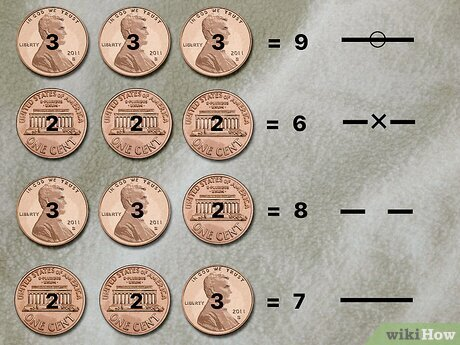
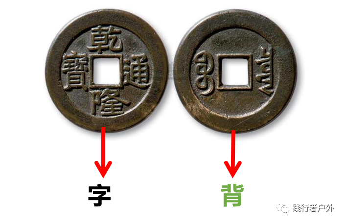

A step-by-step guide to authentic Liu Yao divination using three coins. Master the ancient art of hexagram casting.
Heads = Yang (3 points) — The "active" side with the portrait
Tails = Yin (2 points) — The "receptive" side with the building
and are "changing lines" — they transform into their opposite, revealing future development.
Young Yang (7) and Young Yin (8) are "static lines" — they remain as they are.
You cast 6 times to build a hexagram from bottom (Line 1) to top (Line 6).
Pro Tip: Use three identical coins of the same denomination for consistency. US quarters or pennies work perfectly.

3 Heads = 9 (Old Yang) | 3 Tails = 6 (Old Yin) | 2H1T = 8 (Young Yin) | 1H2T = 7 (Young Yang)

Character side (字) = Yang | Reverse side (背) = Yin
Follow these six phases to perform an authentic I Ching divination. Each phase builds upon the last, creating a ritual of focus and intention.
Before casting, create an environment conducive to focused intention. This is not superstition — it is the practical psychology of entering a receptive state.
The quality of your question determines the quality of your answer. A vague question yields a vague response. A specific, sincere question opens the door to precise wisdom.
The Golden Rule: Ask about process and understanding, not . Instead of "Will I get the job?" ask "What energy surrounds my application to Company X, and how should I approach it?"
This is the heart of the practice. Each cast generates one line of your hexagram. You will cast six times total, from Line 1 (bottom) to Line 6 (top).
Place three coins in your dominant hand. Cup them gently, feeling their weight and temperature.
Hold your question clearly in mind. Do not speak it aloud — let it resonate in your heart.
Shake the coins gently 6-9 times, then release them onto your flat surface.
Traditionally, coins are shaken 6 or 9 times — numbers sacred in Taoist numerology. Six represents the lines of a hexagram. Nine represents the extreme of Yang before transformation. Use whatever number feels natural, but be consistent across all six casts.
Immediately after each cast, record the result before the pattern is disturbed. This is your raw data — treat it with respect.
After six casts, you have all the data needed to construct your hexagram. This is where the abstract becomes visible — the pattern of your situation made manifest.
Line 1 (first cast) goes at the bottom. Line 6 (last cast) goes at the top.
Yang (7, 9) = solid line ———. Yin (6, 8) = broken line — —.
Circle Old Yang (9) and cross Old Yin (6). These lines will transform.
Now comes the reward for your careful work. The hexagram is not a fortune — it is a mirror reflecting the energy pattern of your situation and the natural path of transformation.
Start with the Gua Ci (hexagram text) for your primary hexagram. This gives the overall theme.
If you have changing lines (6 or 9), read their Yao Ci (line texts). These are the most specific guidance.
If lines changed, the second hexagram shows where your situation is heading.
1. The I Ching speaks in archetypes, not specifics. "The dragon rises from the deep" means your potential is emerging — not that you will literally encounter a dragon.
2. Changing lines are the "active" energy in your situation. They represent what is in motion and what requires attention.
3. The text is a starting point, not a command. Use it as a framework for your own intuition and reasoning.
4. Return to the text over days or weeks. The I Ching often reveals deeper layers with time.
Practice the casting process. Choose your preferred method: use real coins and record results, or generate digitally.
Shake three real coins, then click the coin icons to match your result
Your hexagram has been cast. Ready for a full AI-powered reading?
Watch the complete casting process demonstrated step by step. Perfect for visual learners.
Learn the fundamentals of coin divination: Yin and Yang, the four possible outcomes, and how they form hexagram lines.
Watch a complete divination from preparation through interpretation. See how to shake, record, and build the hexagram in real time.
Want to be notified when new videos are released? Subscribe below.
Any three identical coins work perfectly. US quarters, pennies, or Euro coins are all fine. The I Ching responds to your intention and the mathematical probability (not the coin's origin). What matters is consistency — use the same three coins for all six casts.
If a coin lands on its edge or falls off the table, that cast is considered "void" — the energy was not settled. Simply gather the coins and cast again. Some practitioners view this as the I Ching indicating the question needs refinement.
Traditional wisdom says: once per question. If you cast repeatedly hoping for a "better" answer, you are not seeking guidance — you are seeking validation. Wait at least a moon cycle (28 days) before casting on the same topic, or until the situation has materially changed.
No — mental focus is sufficient and often preferred. Speaking aloud can scatter energy. Hold your question clearly in your mind as you shake the coins. Some practitioners silently recite their question in rhythm with the shakes.
A hexagram with no changing lines (all 7s and 8s) indicates a stable situation. The energy pattern is fixed, and the guidance focuses on how to work within the current structure rather than anticipating major shifts. Read the main hexagram text carefully — it contains all the wisdom you need.
Yes, but with important conditions. You must have their explicit permission and they should formulate the question themselves. You act as a "medium" for their energy. Never cast for someone without their knowledge — this violates the principle of sincerity that the I Ching requires.
Now that you understand the method, try it yourself. Our digital divination tool faithfully replicates the coin-casting process.